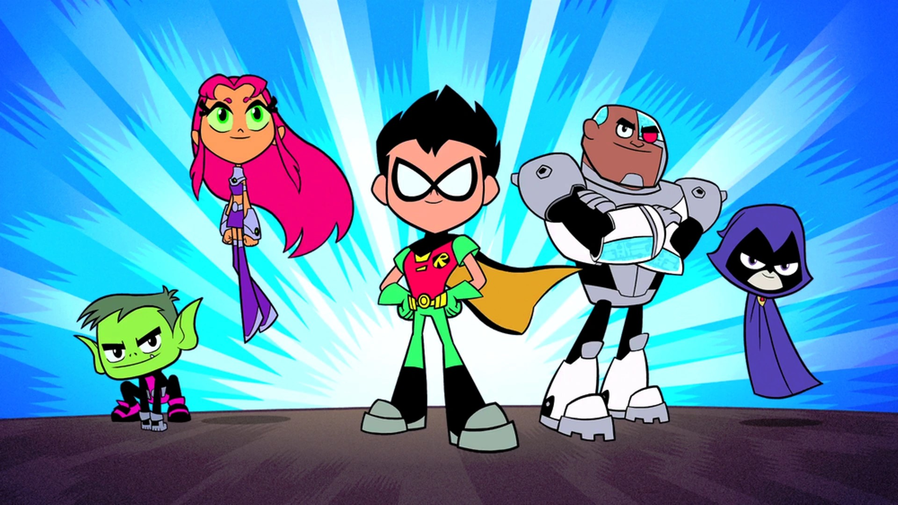
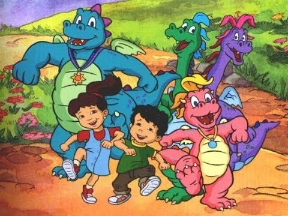
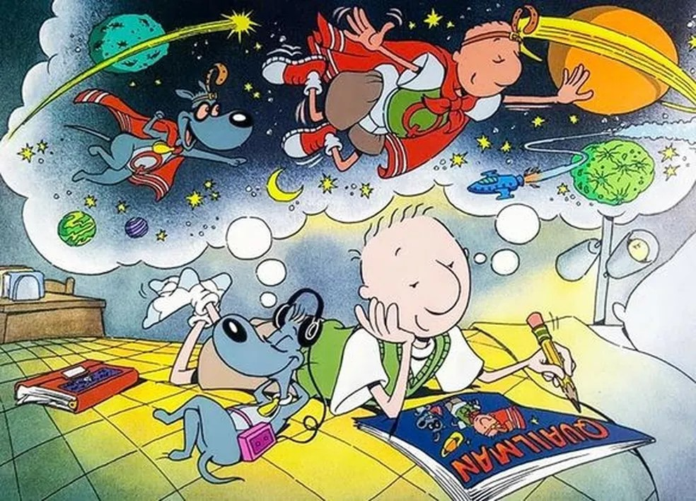
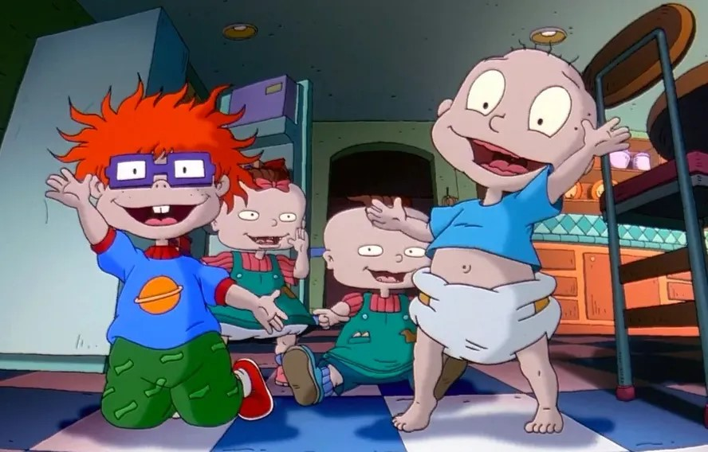
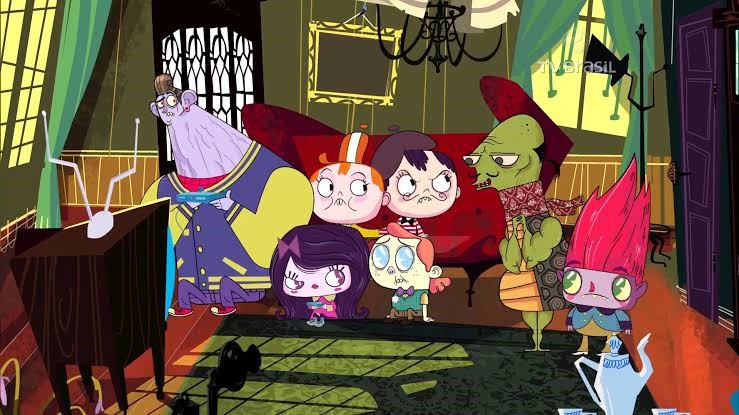
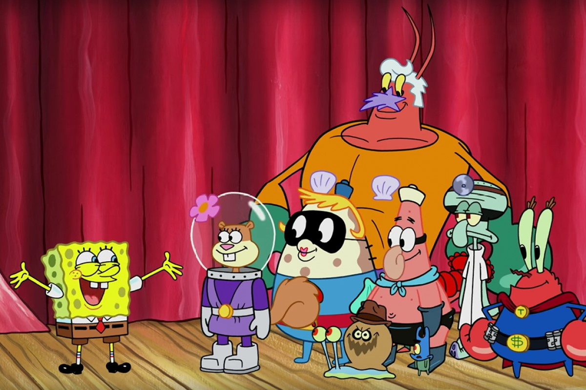
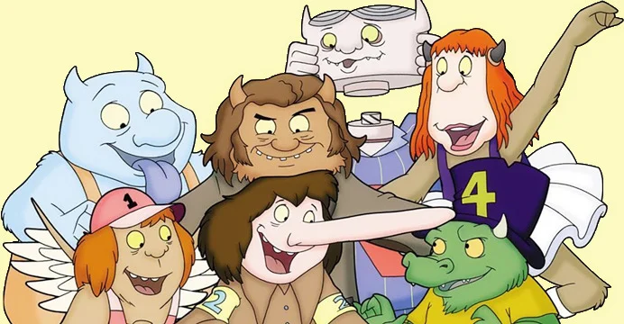
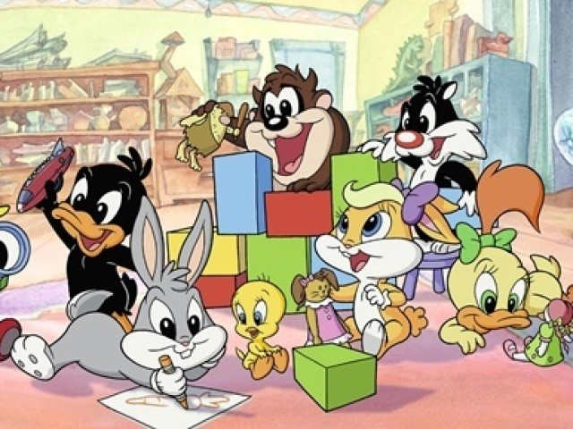
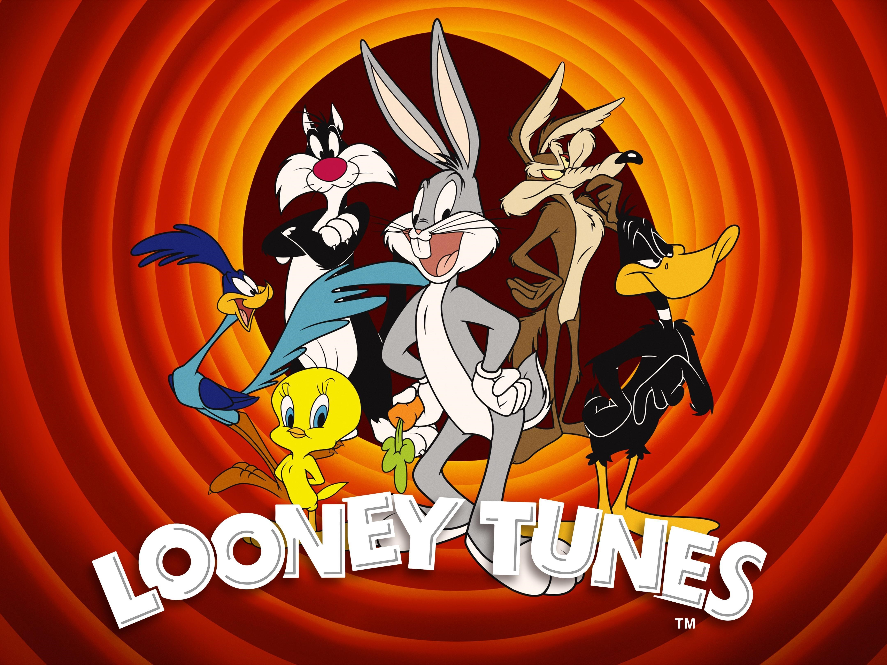

1. Scooby-Doo
Uma série que segue os muitos mistérios
da Mystery Gang, que consiste de Fred,
Daphne, Velma, Salsicha e Scooby.
Juntos, eles viajam ao redor do mundo,
sempre em busca de um mistério a ser
resolvido.

2. Teen Titans Go
Robin, Estelar e outros super-heróis
vivem juntos sem supervisão adulta
e lidam com as questões diárias do
universo jovem quando não estão
salvando o mundo.

3. Historinhas de Dragões
Emília e seu irmão Max, encontram
uma pedra mágica e viajam para a
Terra dos Dragões, onde vivem as
mais incríveis aventuras.

4. Doug
Conheça as provações e os apuros
de Doug, um menino de onze anos
e meio que, quando não está
brincando com seus amigos, gosta
de escrever em seu diário e
fantasiar que é um super-herói.

5. Os Rugrats
Um grupo de bebês mostra suas ideias
sobre o mundo do seu próprio ponto
de vista infantil. Tommy e seus
amigos estão em constante batalha
com a prima mais velha, Angelica,
que gosta de atormentá-los.

6.Historietas Assombradas para Crianças Malcriadas
A história de um menino de 11 anos
chamado Pepe, que ajuda sua avó
fazendo entregas de artefatos e
poções mágicas pela internet.

7. Bob Esponja
Uma esponja-do-mar chamada Bob
Esponja Calça Quadrada mora com
seu caracol de estimação na
Fenda do Biquíni, no fundo do
oceano. Bob trabalha no Siri
Cascudo e, nas horas vagas,
vive arrumando confusões com
seu melhor amigo, a
estrela-do-mar Patrick.

8. Os sete monstrinhos
O cotidiano de uma divertida família cujos sete irmãos estão sob os cuidados da mãe o tempo todo. Cada um deles tem diferentes feições monstruosas e divertidas personalidades. Eles enfrentam os desafios da infância e ajudam uns aos outros.

9. Baby Looney Tunes
Divirta-se com as loucas aventuras de Pernalonga, Patolino, Frajola, Piu-piu, Lola e Taz ainda bebês morando na casa da Vovó e aprontando altas trapalhadas.

10. O show dos Looney Tunes
Looney Tunes é uma série de curta-metragens de animação americanos, produzida de 1930 a 1969 e distribuída pela Warner Bros.
